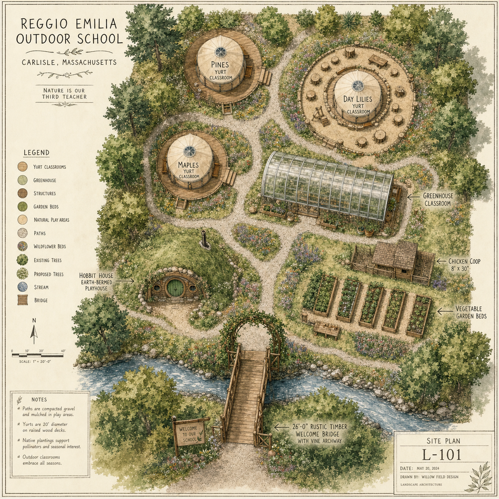
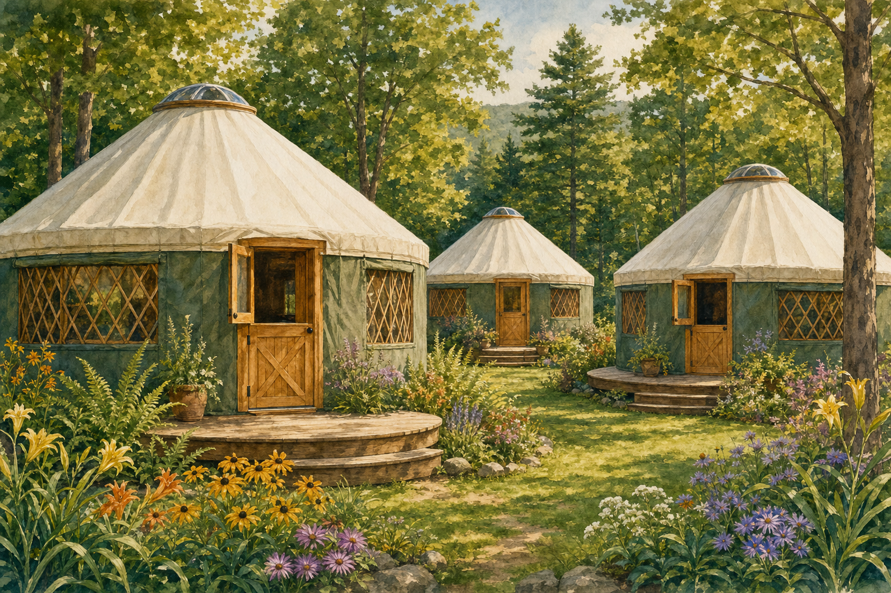
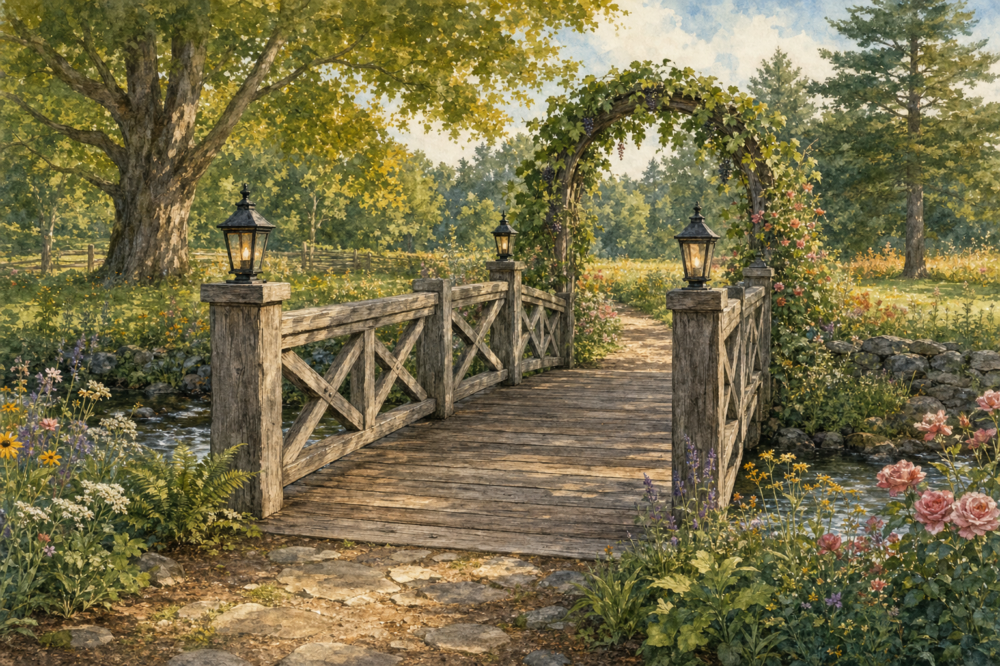
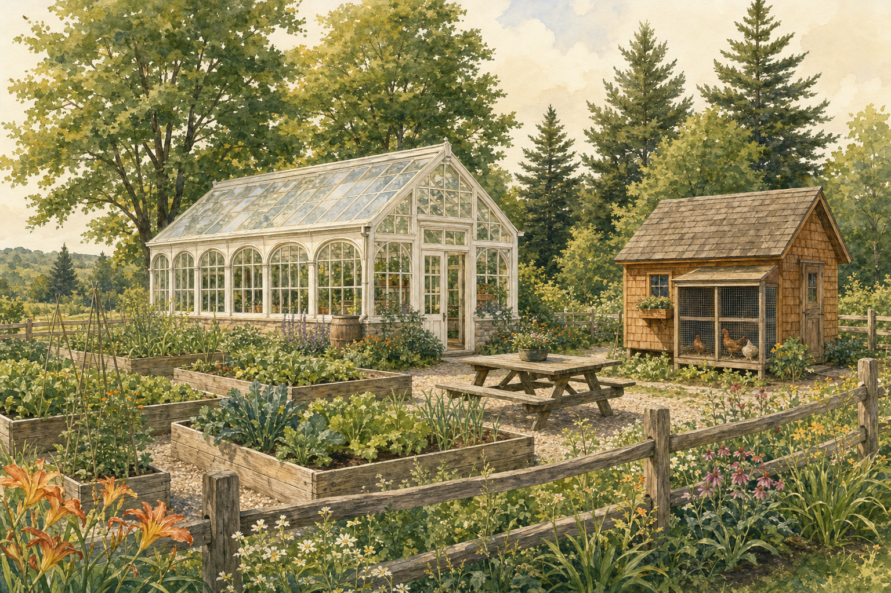
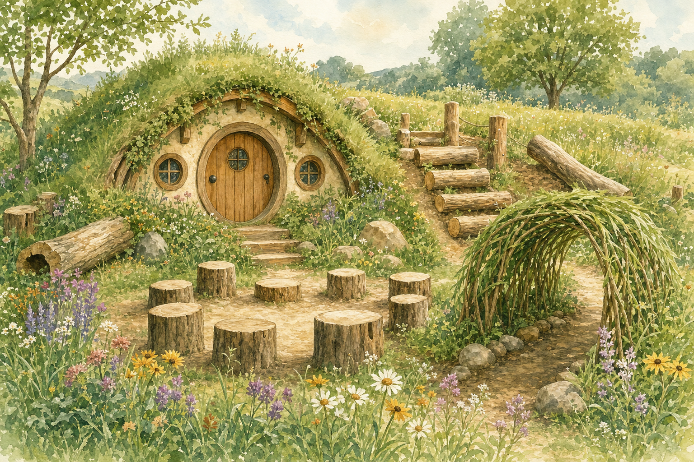

The land at 201 Bedford Road.
Eighteen acres in Carlisle — meadow, mature forest, a seasonal stream, and a clearing the size of a small farm. This is what we’re proposing to build there.
The plan was developed with families, teachers, and a landscape architect to honor what the land already does well — mature maples and pines, a seasonal stream at the entrance, a south-facing meadow — while adding what a working outdoor school needs: real classroom buildings, a greenhouse, a working coop, and the kind of open natural play that disappears when children are inside all day.

Three yurt classrooms.
Pines, Maples, and Day Lilies — 30-foot Pacific yurts on raised wooden decks, insulated and wood-stove warmed for the New England winter.

Each yurt is anchored to the trees that share its name. Pines sits among the white pines at the back of the meadow. Maples looks out on the sugar maple grove (which doubles as a tapping classroom in February). Day Lilies sits inside the natural playground circle — the youngest children’s yurt, ringed by stump seats and the hobbit house.
Each yurt is a flagship-tier naming opportunity at $50,000–$100,000 — a permanent legacy for the family or foundation that funds it.
The Welcome Bridge.
A 26-foot timber bridge, ten feet wide, crossing the seasonal stream at the entrance. Every child crosses it twice a day, every day — the threshold between the road and the woods, between the ordinary and the school.

A bridge is more than infrastructure — it’s a metaphor. Naming the welcome bridge is the most permanent legacy gift in the campaign: a structure that touches every child’s day, every visitor’s first impression, and every photograph taken at the school for decades to come.
The bridge can be sponsored as a single lead gift, or piece-by-piece — lanterns, planks, railings, posts, foundation stones, and the entry archways are all named giving opportunities.
What the bridge could fund alone
| Element | Available | Each | Total |
|---|---|---|---|
| Lead naming | 1 | $200–400k | $200–400k |
| Center plaque | 1 | $25–50k | $25–50k |
| Entry arches | 2 | $15–25k | $30–50k |
| Foundation stones | 2 | $15–25k | $30–50k |
| Railing sections | 10–12 | $5–10k | $50–120k |
| Railing posts | 12–14 | $2.5–5k | $30–70k |
| Lanterns | 4–8 | $2–5k | $8–40k |
| Engraved planks | ~40 | $1–2.5k | $40–100k |
| Total potential | $413–880k |
Greenhouse, garden, and coop.
The working farm part of farm school — a year-round greenhouse classroom, raised vegetable beds, and an 8′×30′ chicken coop with a viewing window so children can watch hens lay.

The greenhouse extends the growing season to twelve months — seedlings in February, tomatoes in November. Children plant, tend, and harvest. The coop teaches routine, responsibility, and where eggs come from.
Both are named giving opportunities — the greenhouse at $75k–$150k as a flagship gift, the coop at $8k–$15k as an exceptional mid-tier sponsorship.
The market barn.
The heart of 201 Bedford Road is its post-and-beam market barn — the one our community has known for ten years as Clark Farm Market, where families gathered for blueberry festivals, holiday markets, pick-your-own afternoons, and farm-to-table evenings. We are keeping it exactly as it has always served the town: a welcoming, beautiful, all-season gathering place.
For the school, the market becomes our community room — rainy-day classroom space, family potluck dinners, parent meetings, and the annual harvest celebration. Paired with our 30′ event tent, the market and surrounding grounds comfortably host gatherings of 75 to 150 guests.
Because it is already a known and loved event venue, we are extending its life in a unique way: Corporate Founders who help us preserve it are welcome to host one private company event there each year, free of charge, for the length of their sponsorship — 3, 5, or 10 years, or perpetually for the naming sponsor. It is the only naming opportunity on the property that returns something tangible to the giver year after year.
A natural playground.
Stump gardens, willow tunnels, climbing logs, a hobbit house, and a story-time stump circle — everything wood, stone, and living plant. No plastic, no off-the-shelf equipment.

The natural playground borrows directly from the Castle Playground Project model down the road in Carlisle — a community-built, named-piece-by-named-piece outdoor space that becomes a town landmark. Sponsor a stump, a climbing log, a boulder cluster, or the willow tunnel itself.
Want a deeper walkthrough?
Email Jenna for the full architectural plans, schedule a site visit, or join us for a community walk-through.
Get in touch →